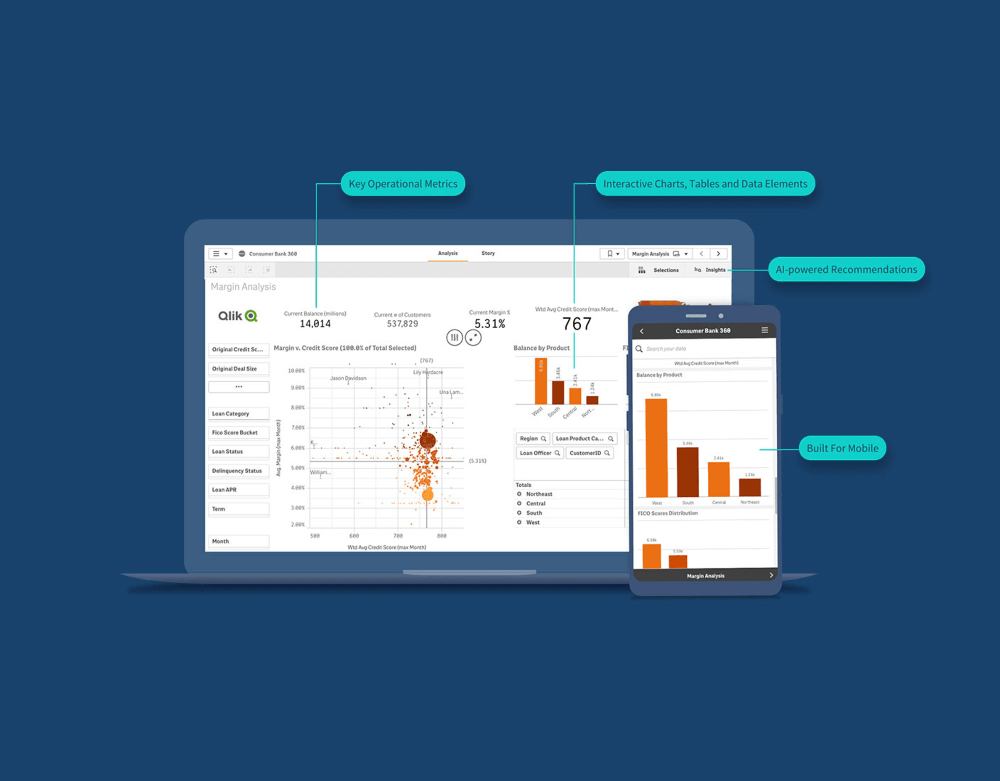
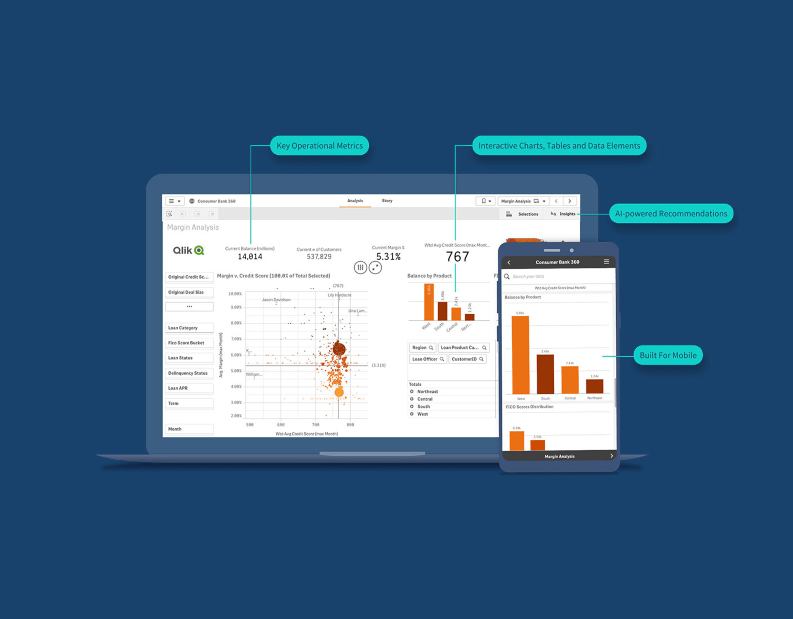

With a genuine passion for harnessing the power of data to drive meaningful change, I am an empathetic and driven professional who thrives on turning complex challenges into opportunities for growth. My journey has been one of continuous learning and adaptation, fueled by an insatiable curiosity and a deep desire to make a positive impact. From conducting meticulous market research to leading cross-functional teams, I have consistently demonstrated my ability to think strategically, act decisively, and deliver results that exceed expectations. I firmly believe that the key to success lies in the perfect amalgamation of technical expertise, business acumen, and a human-centric approach. It is this unique blend of skills and perspective that allows me to not only analyze data but also to understand the stories and emotions behind the numbers. As I embark on the next chapter of my professional journey, I am eager to bring my passion, expertise, and empathy to an organization that shares my vision of leveraging data-driven insights to drive innovation, foster growth, and make a lasting difference in the lives of others.
 

This financial analytics dashboard provides comprehensive insights into the performance of Roper Technologies (ROP), Ametek (AME), and Fortive Corporation (FTV). Integrating SEC data and financial modeling APIs, it offers real-time access to critical metrics and data visualizations. Powered by Streamlit, Pandas, and SQL, this user-friendly platform enables users to explore complex financial data, facilitating informed decision-making for investors, analysts, and industry professionals.
Please wait for 30 seconds for the visualization to generate.
The Customer Disputes Dashboard provides a powerful visualization tool for understanding and analyzing customer complaints across different states and companies. By leveraging data from the Consumer Financial Protection Bureau (CFPB) Consumer Complaint Database, this interactive dashboard offers valuable insights into the distribution and patterns of customer disputes, enabling organizations to make informed decisions and implement strategies to improve customer satisfaction and address potential issues.
Please wait for 30 seconds for the visualization to generate.

The interactive 3D scatterplot visualization is a powerful tool for exploring and analyzing the multi-dimensional relationships between various tumor features in the breast cancer dataset. This innovative visualization allows users to select any three features from a comprehensive list and visualize their relationships in a dynamic, three-dimensional space. The data points are color-coded based on the tumor diagnosis (malignant or benign), providing a clear visual distinction between the two groups.
Please wait for 30 seconds for the visualization to generate.